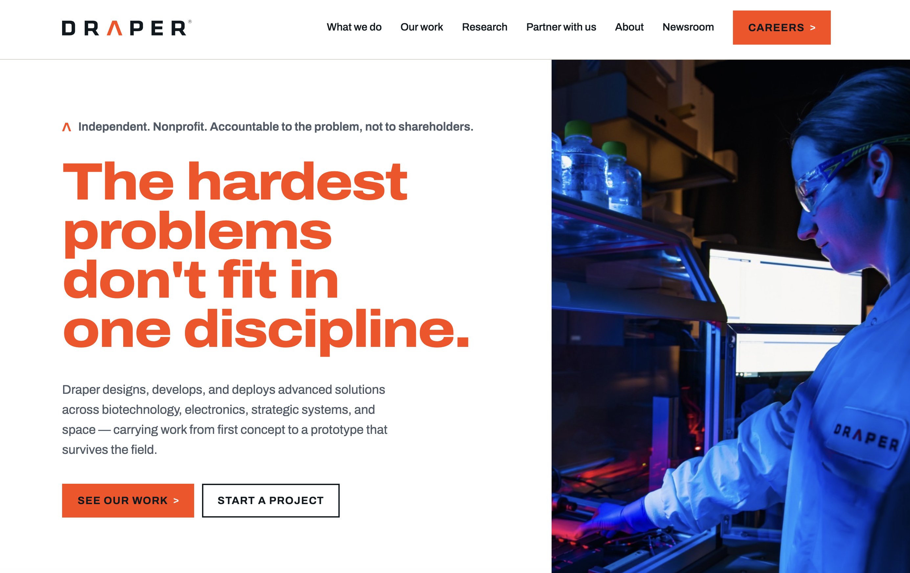
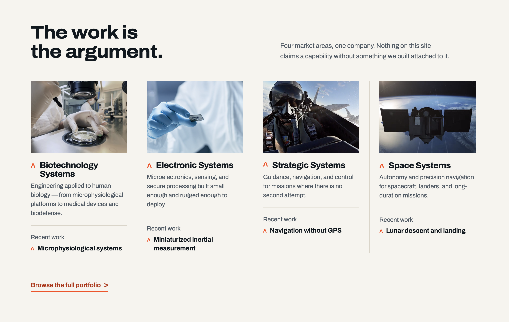
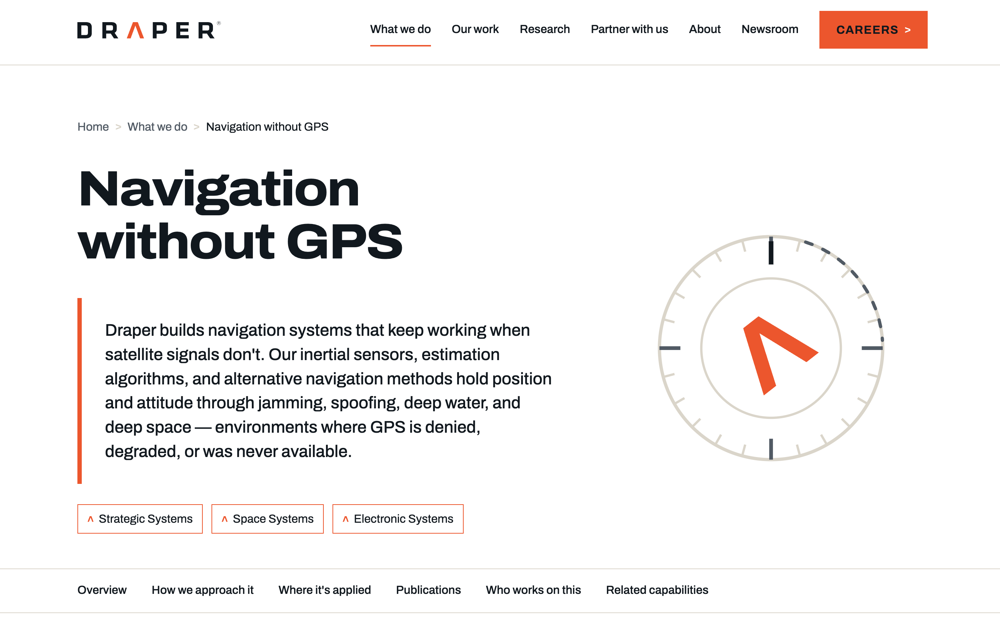
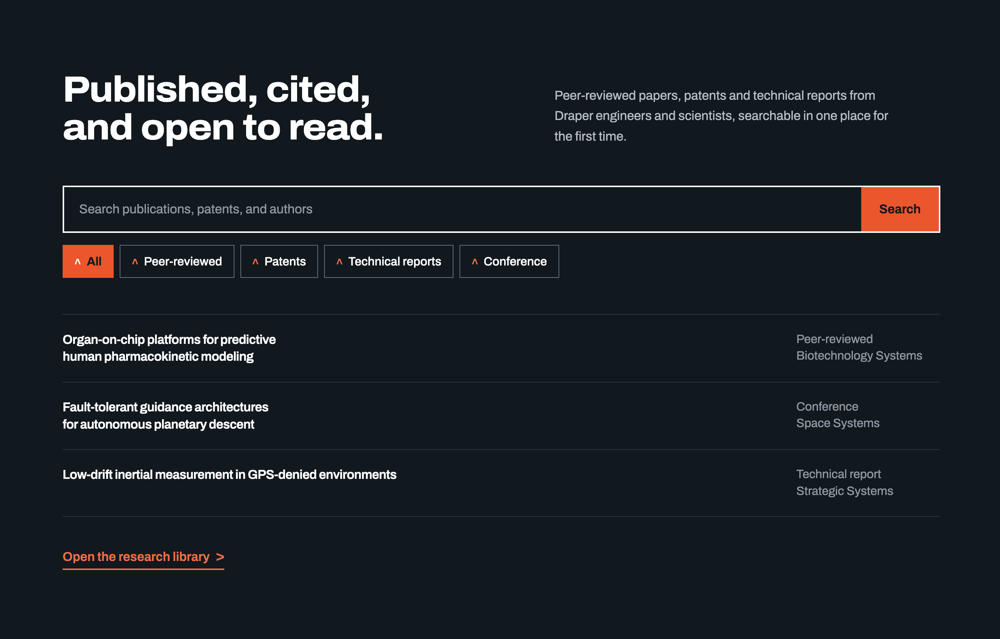
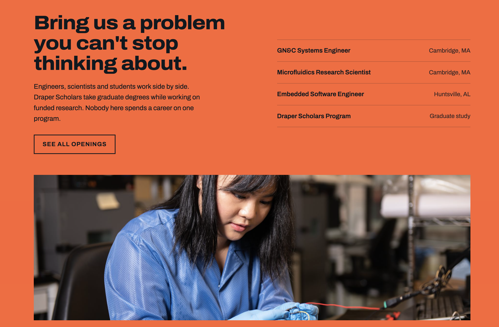

Draper Web Strategy & Prototype
A speculative redesign commissioned as part of a hiring process — covering platform investigation, information architecture, content strategy, AEO/GEO optimization, and a hand-coded prototype delivered as a live site across three pages.
The Brief
Draper is an independent nonprofit R&D company headquartered in Cambridge, MA — the organization that built the guidance computer that landed humans on the moon and continues to work on space systems, biomedical devices, and national defense. As part of a hiring process for a Web Production Specialist role, I was asked to assess draper.com and propose improvements, then build a prototype demonstrating my thinking.
Rather than starting with visual design, I started with a platform investigation — trying to understand what draper.com was actually built on and whether the existing architecture was serving Draper's audiences well. What I found shaped everything that followed.
The Platform Finding
Examining draper.com's asset URLs, I found they pointed to a CloudFront host that also serves Intel, Chimera Investment, and Palmer Square Capital — all public companies using investor relations platforms. The accessibility statement on draper.com included boilerplate about known delays for earnings webcasts and SEC filings. Draper holds no earnings calls and files nothing with the SEC.
The site was not underdesigned — it was on the wrong tool. The information architecture was organized like an investor relations site because the platform was built for investor sites. An R&D organization's actual needs — a program portfolio, a research library, a clear path in for partners, a proper recruiting experience — were not present because the platform was never designed for them.
This finding shaped the strategic recommendation: a migration to Drupal 11 on Acquia Cloud, which holds FedRAMP authorization — an alignment defensible for an organization holding CMMC Level 2 certification and serving federal customers. Drupal's entity and taxonomy system is also built for the deeply interrelated structured content a research organization needs, in a way a commercial investor relations platform is not.
Information Architecture
The existing navigation was organized like an org chart — structured around how Draper is organized internally rather than how four very different audiences approach it. A government program manager, a graduate student, a commercial partner, and a journalist were all entering through the same front door with no differentiation.
The proposed IA made six structural changes:
- Merged Capabilities and Market Areas into one navigable matrix so visitors can enter from either axis
- Created an Our Work section — a program and project library that does not currently exist anywhere on the site
- Added a searchable Research library for peer-reviewed papers, patents, and technical reports — the most citable content an R&D organization can publish
- Unified Careers and Education Programs into one talent pipeline since they serve the same audience at different stages
- Brought DraperSPARX and the partner pathway out of the utility bar into a proper navigation item
- Created a dedicated Newsroom to replace scattered press release content

Design System
The design system was built around one device Draper already owns: the caret from the wordmark. It points somewhere, it appears in every approved brand context, and it survives across a microfluidics photograph and a spacecraft render without losing coherence. Using it as the structural device across the site — wayfinding markers, link affordances, breadcrumb separators, section indicators, button icons — means one shape does the work that generic chevrons do on every other site.
Under the hood the caret is a single SVG symbol referenced everywhere, giving one source of truth across the entire prototype. The wordmark's caret color is a CSS custom property covering both the dark-ground and orange-ground versions the brand guide requires.
Every competitor — Lincoln Lab, APL, MITRE, Aerospace Corporation — lands in the same place: navy, dark grounds, hexagon meshes. Draper's own color is a hot orange on a light ground. Following the existing guidelines produces a site nobody could confuse with a competitor's.


AEO and SEO Strategy
The way people find a defense R&D organization has changed. A program manager wondering who does microphysiological systems work for BARDA is as likely to ask an AI assistant as search Google. To appear in those answers, content needs to be structured so AI systems can cite it — and draper.com currently has almost none of that content. Press releases mostly, which announce things rather than explain them.
- Publications library as the primary citation engine — papers, patents, and technical reports are the most citable content an R&D organization publishes
- Structured data across the board — ScholarlyArticle, JobPosting, FAQPage, and Organization schema implemented throughout
- Each capability page opens with a direct, extractable answer before the narrative
- Entity consistency across the site — Draper Laboratory, Draper Associates, and Draper Startup House all compete for the same search term

Accessibility
Every color pair in the prototype was measured before publishing. Four failed — all were corrected before the prototype went live. The most significant was the focus ring inside the orange careers band: an orange ring on an orange background produced a contrast ratio of 1.15:1, effectively invisible to anyone tabbing through the page. It would look fine visually while completely failing keyboard users.
| Pair | Ratio | Result | Action |
|---|---|---|---|
| Orange focus ring on orange field | 1.15:1 | Fail | Changed to black focus ring (6.04:1) |
| Draper Orange on white (body copy) | 3.42:1 | Fail | Orange reserved for display only; body copy uses Draper Black |
| White text on Draper Orange | 3.42:1 | Fail | Changed to Draper Black on orange (14.7:1) |
| Light grey text on white | 2.8:1 | Fail | Darkened to mid-grey (4.6:1) |
| Draper Black on white | 19.5:1 | Pass | No change |
| White on dark navy | 14.2:1 | Pass | No change |
Seventy-five decorative caret SVGs were given aria-hidden="true" before the prototype went live. Inline SVG without that attribute is announced by screen readers as an unnamed graphic, which would mean an interruption before every link and heading on the page. The fix is one attribute but the audit to find it requires actually testing with assistive technology.
Outstanding work documented transparently in the strategy: reflow at 320px and 400% zoom, text-spacing override testing, screen reader output verification, and full keyboard operation audit including focus management for the mobile menu. These were identified and scoped honestly rather than claimed as complete.

The Outcome
The prototype was delivered as a live three-page site and presented to a five-person panel including the Chief Communications Officer, Director of Creative Services, and the Supervisor of Media Relations. The strategic document accompanying it covered platform recommendation, information architecture, content model, AEO/GEO strategy, and an honest accounting of what was complete and what would need further validation in a real engagement.
The project demonstrated the full range of work this kind of role requires: platform investigation, strategic thinking, information architecture, design system development, hand-coded front-end implementation, accessibility auditing, and AEO/SEO strategy — delivered as working, inspectable code rather than a slide deck.